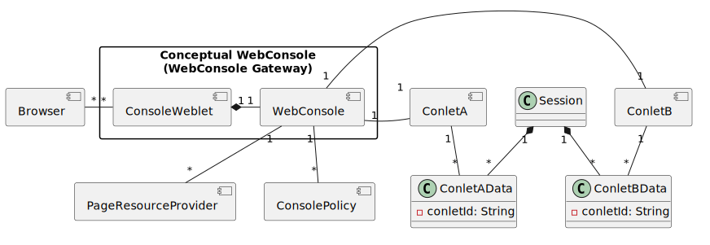
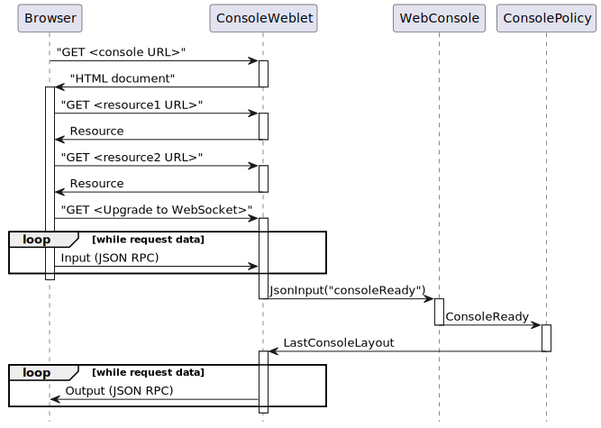
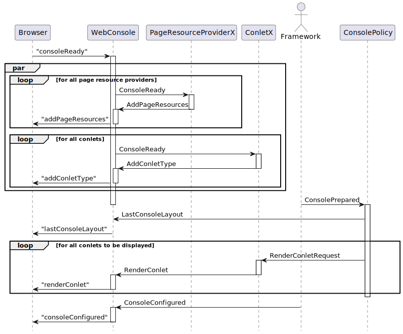

Package org.jgrapes.webconsole.base
- Overview
- Web Console Components
- Web Console Session Startup
- Web Console Session Use
- Writing a web console display component (Conlet)
Overview
A web console built with the components provided here is a single page application (SPA) that —from the user’s point of view— consists of a fixed frame with configurable content. The frame provides some means to add content (typically by using a dropdown menu) and to configure global settings such as the locale.
The content of the frame is provided by web console display components or “conlets” for short. These components typically provide a summary or preview display that can be put on an overview panel in a dashboard style and a large view that is supposed to fill the complete frame.
Tabs or a menu in a side bar can be used to switch between the overview panel(s) and the large views of the different conlets.
Web Console Components
WebConsole and ConsoleWeblet
The WebConsole component
is conceptually the main component of a web console. It exchanges events
with the display components and helper components,
using a channel that is independent of the channel used for the
communication with the browser.
The WebConsole component is
automatically instantiated as a child component of a
ConsoleWeblet which handles the
communication with the HttpServer and thus
with the browser. You can think of the
ConsoleWeblet/WebConsole
pair as a gateway that translates the Input/Output related events on the
HTTP/WebSocket side to web console related events and vice versa.

In the browser, the web console is implemented as a single page
application (SPA). The ConsoleWeblet
provides the initial HTML document that implements the basic structure of
the web console. Aside from additional HTTP requests for static resources
like JavaScript libraries, CSS, images etc. all information is
then exchanged using JSON messages sent over a web socket
connection that is established immediately after the initial
HTML has been loaded. The information exchanged includes,
in particular, the registration of web console display components
and helper components, which are described below.
ConsoleWeblet is an abstract
class that has to be extended by derived classes such as
VueJsConsoleWeblet.
The derived classes provide the resources for an actual console
page. This allows differently styles consoles to be build on a
common foundation. The ConsoleWeblet
provides some JavaScript classes
functions
that can be used to build the SPA.
Page Resource Providers
The initial HTML document may already include some JavaScript
resources which are required to implement the basic functions
(such as providing the header with the web console related menus).
The web console display components may, however, require additional libraries
in order to work. While it is possible for the web console display components
to add libraries, it is usually preferable to add such libraries
independent from individual web console display components in order to avoid
duplicate loading and version conflicts.
This is done by PageResourceProviders
that fire the required events on web console startup (see below).
Web Console Display Components
Web console display components (“conlet components”) represent available
content types. When a display component is actually used
(instantiated) in the web console, state information that represents
the instance has to be created and maintained on the server side.
How this is done is completely up to the web console display component.
A common approach, which is supported by the display component base class
AbstractConlet, is shown in the
diagram above.
Using this approach, the display component creates a data object for each instance as an item stored in the browser session. This couples the lifetime of the data instances with the lifetime of the general session data, which is what you’d usually expect. Note that the data object is conceptually a view of some model maintained elsewhere. If the state information associated with this view (e.g. columns displayed or hidden in a table representation) needs to be persisted across sessions, it’s up to the web console component to do this, using a persistence mechanism of its choice.
The functionality that must be provided by a web console display component with respect to its presentation on the web console page will be discussed later, after all component types and their interactions have been introduced.
Web Console Policies
Web console policy components are responsible for establishing the initial
set of web console display components shown after the web console page has
loaded. Usually, there will be a web console policy component that
restores the layout from the previous session.
KVStoreBasedConsolePolicy
is an example of such a component.
There can be more than one web console policy component. A common use case is to have one policy component that maintains the web console layout across reloads and another component that ensures that the web console is not empty when a new session is initially created. The demo includes such a component.
Web Console Session Startup
Web Console Page Loading
The following diagram shows the start of a web console session up to the exchange of the first messages on the web socket connection.

After the web console page has loaded and the web socket connection has been
established, all information is exchanged using
JSON RPC notifications.
The ConsoleWeblet processes
Input events with serialized JSON RPC
data from the web socket channel until the complete JSON RPC notification
has been received. The notification
(a JsonInput from the servers point
of view) is then fired on the associated
ConsoleSession channel, which allows it to
be intercepted by additional components. Usually, however, it is
handled by the WebConsole that converts it
to a higher level event that is again fired on the
ConsoleSession channel.
Components such as web console components or web console policies respond
by sending
ConsoleCommands on the
ConsoleSession channel as responses.
The ConsoleCommands are handled
by the ConsoleWeblet which serializes
the data and sends it to the websocket using
Output events.
Web Console Session Preparation and Configuration
The diagram below shows the complete mandatory sequence of events
following the web console ready message. The diagram uses a
simplified version of the sequence diagram that combines the
ConsoleWeblet and the
WebConsole into a single object and leaves out the
details about the JSON serialization/deserialization.

The remaining part of this section provides an overview of the preparation and configuration sequence. Detailed information about the purpose and handling of the different events can be found in their respective JavaDoc or in the documentation of the components that handle them. Note that the these detailed descriptions use the simplified version of the sequence diagram as well.
The preparation sequence starts with
AddPageResources events fired
by the PageResourceProvider components
in response to the ConsoleReady event.
These cause the web console page to load additional, global resources.
In parallel (also in response to the
ConsoleReady event), each
display component
fires an AddConletType event.
This causes the web console page in the browser to register the
web console component type in the web console’s menu of
instantiable display components and to load any
additionally required resources.
When all previously mentioned events have
been processed, the web console is considered prepared for usage and a
ConsolePrepared event is generated
(by the framework as CompletionEvent of the
ConsoleReady event). This causes
the web console policy to send the last known layout to the web console page
in the browser and to send
RenderConletRequest events
for all display components (instances, to be precise) in
that last known layout. These are the same events as those sent by the
browser when the user adds a new web console component instance to the web
console page. The web console policy thus “replays” the creation of the
web console components and the portal page uses the last layout
information to restore the previous positions.
As completion event of the ConsolePrepared
event, the framework generates a
ConsoleConfigured event which is sent to
the web console, indicating that it is now ready for use.
Web Console Session Use
After the web console session has been configured, the system usually
waits for input from the user. Changes of the layout of the
web console page result in events such as
AddConletRequest,
RenderConletRequest and
ConletDeleted.
Actions on web console components trigger JSON messages that result in
NotifyConletModel events
which are processed by the respective display component. If,
due to the results of the action, the representation of the
display component on the web console page must be updated, the
web console component fires a
NotifyConletView event.
NotifyConletView events
can also be sent unsolicitedly by web console components if
the model data changes independent of user actions.
Writing a web console display component (Conlet)
Web console display components (“conlets”) are components that consume and
produce events. They
don’t have to implement a specific interface. Rather, they have
to exhibit a specific behavior that can be derived from the
descriptions above. The documentation of the base class
AbstractConlet summarizes
the responsibilities of a web console component.
Display components consist of (at least one) Java class and HTML
generated by this class. Optionally, a display component can
contribute style information and JavaScript
(see AddConletType).
It may (and should) make use of the styles and
classes
provided by the web console JavaScript object in the browser page.
- See Also:
-
ClassDescriptionAbstractConlet<S extends Serializable>Provides a base class for implementing web console components.The information tracked about web console components that are used by the console.The Class BrowserLocalBackedKVStore.This interface provides web console component related constants.The render modes.Defines a web console component base model following the JavaBean conventions.A factory interface for web console components.A
ResourceBundle.Controlthat implements a special lookup algorithm.The server side representation of a window in the browser that displays a console page (a console session).The server side base class for a web console single page application (SPA).A component that restores the console layout using key/value events for persisting the data between sessions.Base class for implementing components that add resources to the<HEAD>section of the web console page.A factory interface forPageResourceProvidercomponents.Provides support for creating URIs in the web console scope that are forwarded to components listening on the web console channel.Returns aRunnablethat writes to anOutputStreamas result.The interface that must be implemented by the content provider.Returns anOutputStreamas result.Returns aURLas result.Thrown if a resource cannot be found.Indicates that a resource provider found the resource to be unmodified.Indicates that a resource provider has fully processed the resource request a provided a response.The base class for all results from processing a resource request.Evaluates and provides the styling info to a web console component.A principal representing an identity established by a client.Provides the web console component related part of the console.The MBeans view of a console.An MBean interface for getting information about all consoles.